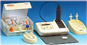

Группа врачей из США исследовала ценность экспресс-теста по определению уровня C-реактивного белка (СРБ) в крови для диагностики внебольничной пневмонии. В исследовании приняло участие 168 взрослых пациентов с жалобами на кашель. Уровень СРБ у пациентов с рентгенологически подтверждённой пневмонией был статистически достоверно выше.
На основании полученных данных можно сделать вывод о том, что экспресс-тест по определению уровня СРБ в крови является ценным в диагностике внебольничной пневмонии.
Для диагностики пневмонии у пациентов с кашлем предложен целый ряд диагностических критериев. Однако использование этих критериев в практике затруднено.
На основании данных о высокой чувствительности и специфичности уровня C-реактивного белка (СРБ) для диагностики пневмонии, группа врачей в США во главе с доктором R. Gonzales исследовала ценность экспресс-теста по определению СРБ. В исследовании приняло участие 168 последовательно включенных пациентов с жалобами на кашель продолжительностью не более 3 недель. Уровень СРБ в крови из пальца определялся с помощью системы NycoCard II Test Kit (Axis-Shield of Oslo, Norway).

У всех пациентов помимо определения СРБ и проведения рентгенографии органов грудной клетки проводилась так же оценка симптомов заболевания. У 20 пациентов (12%) пневмония была подтверждена рентгенологически. Средний уровень СРБ у пациентов с подтверждённой пневмонией был статистически достоверно выше, чем средний уровень СРБ у пациентов без пневмонии (60 мг/л vs 9 мг/л, p<0,0001). Оценка клинических показателей практически не оказывала влияния на связь уровня СРБ и пневмонии.
Статистический анализ подтверждает, что экспресс-тест по определению уровня СРБ имеет такую же диагностическую силу, как и утверждённая шкала Хекерлинга.
При уровне СРБ 100 мг/л и выше тест по определению СРБ был высоко специфичен в отношении диагностики пневмонии. Эта пороговая величина позволяет в сомнительных случаях решить вопрос о необходимости рентгенографии органов грудной клетки или начале эмпирической антибактериальной терапии.
Таким образом, на основании представленных данных можно сделать вывод о том, что экспресс-тест по определению уровня C-реактивного белка в крови является ценным в диагностике внебольничной пневмонии.
Flanders S.A., Stein J., Shochat G., Sellers K., Holland M., Maselli J., Drew W.L., Reingold A.L., Gonzales R.
Performance of a bedside C-reactive protein test in the diagnosis of community-acquired pneumonia in adults with acute cough.
Am J Med 2004; 116(8): 529-35.